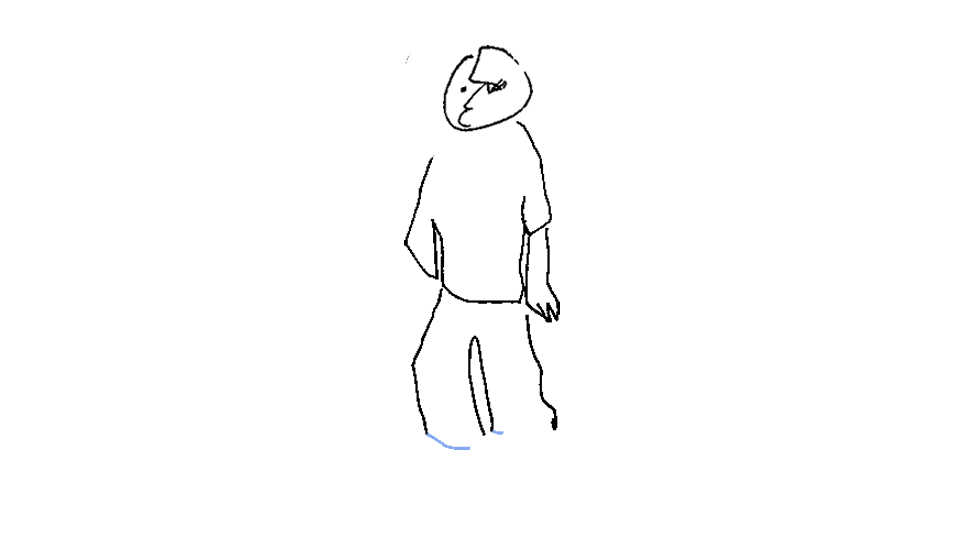
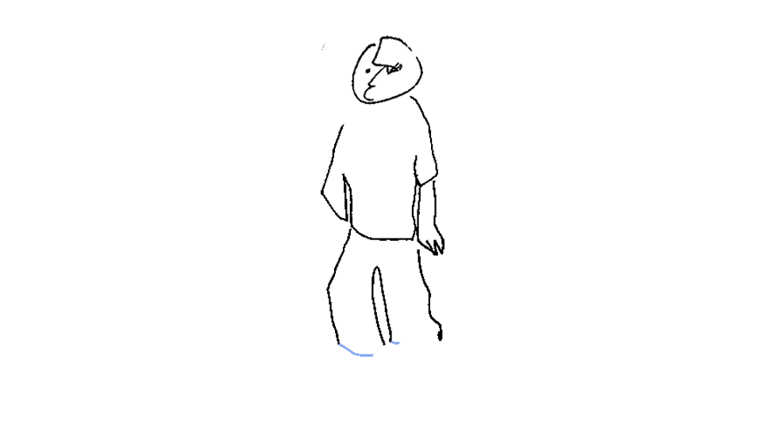
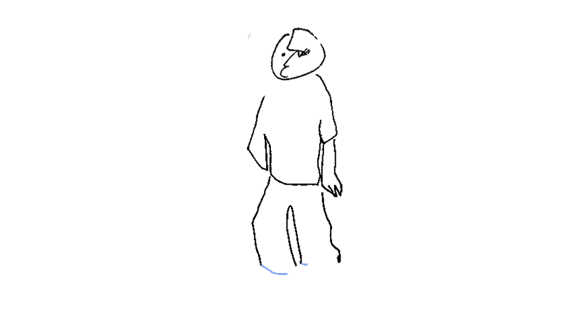
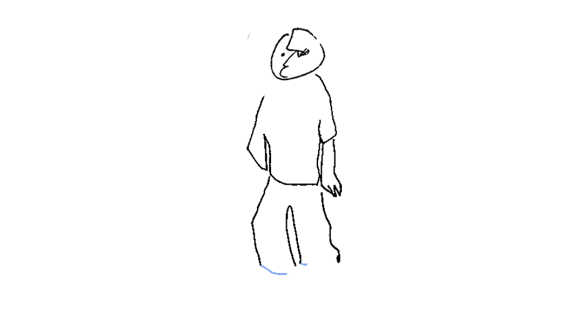

Music by New Chance … A reading by Mei-mei Berssenbrugge … Video by Marvin Luvualu António … A conversation with Fan Wu
Floral arrangements by Gunnar Floral … Livestream by Oliver Husain … Sound design by Matt Smith … Cameras by Monica Moraru and Khanh Tudo … Produced by Robin Simpson
Annie Wong … Gallery TPW … Rinaldo Walcott … Another Story Bookshop … Brick Books
Megumi Kokuba … Charlton Diaz … Anni Spadafora
Yan Wu
Livestream by Oliver Husain …Visuals by Iris Ng and Serena Lee … Costumes Vanessa Magic … Music by Matt Smith … Produced by Art Museum of UofT for Immaterial Architecture
Hiroshi Yoshida … Barbara Fischer … Toronto Dance Theatre
Proddy Produzentin … Mary Messhausen … Mary Messhausen … Macy Rodman
Livestream by Oliver Husain … Camera by Danny Polonsky
Petzel Gallery … Seth Kelly … Rodrigo Parodi … Robin Simpson